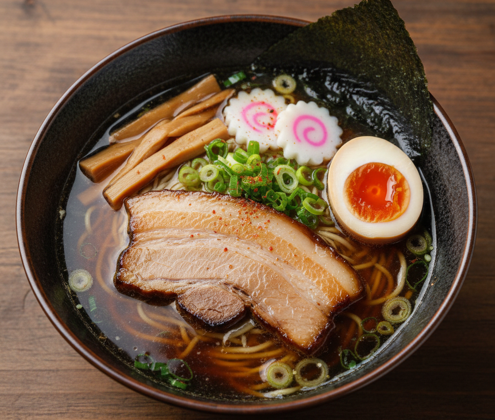

Zurück
Vorbereitung: 48h - Zubereitung: 45min
Tokyo Shoyu Ramen
Vorbereitung: 48h - Zubereitung: 45min

Zutaten (2 Portionen):
Für die Brühe:
- 1L Dashi Brühe
- 4EL Sojasauce
- 2 EL Sake
Beilagen & Topping:
- 2 Ajitsuke Tamago – marinierte Ramen Eier – 48 h zuvor vorbereiten
- 4 Stück Kakuni – geschmorter Schweinebauch – einen Tag vorher vorbereiten
- einige Menma Bambusscheiben
- etwas Narutomaki (aus dem Tiefkühlregal)
- 2 Frühlingszwiebeln
- 1 Noriblatt
- etwas Shichimi Togarashi (japanisches Chiligewürz)
Zubereitung
- Zutaten bereitlegen, Dashi-Brühe vorbereiten sowie Ajitsuke Tamago, Kakuni und Narutomaki bereitstellen bzw. auftauen.
- Beilagen vorbereiten: Eier halbieren, Kakuni und Narutomaki in Scheiben schneiden, Bambus abtropfen lassen, Frühlingszwiebeln in Ringe schneiden, Nori zuschneiden.
- Wasser für die Ramen-Nudeln zum Kochen bringen (ca. 1 l pro Portion).
- Dashi-Brühe mit Sojasauce und Sake abschmecken und warm halten.
- Ramen-Nudeln ca. 2 Minuten kochen, abgießen und kurz kalt abschrecken.
- Nudeln in Schüsseln geben, mit Brühe auffüllen und Beilagen darauf verteilen.
- Heiß servieren und genießen – Itadakimasu!
